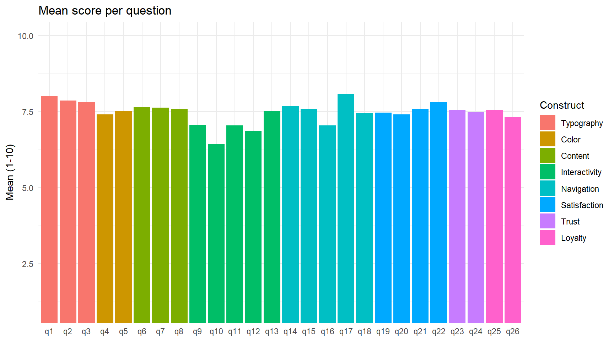
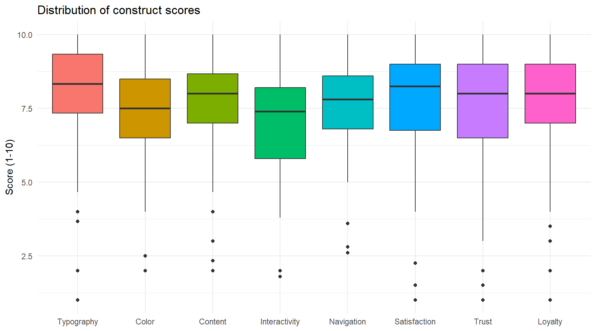

Show code
# ---- 1. LIBRARY ----
#install.packages(c("dplyr", "tidyr", "ggplot2", "readr", "psych", "car"), dependencies = TRUE)
library(dplyr)
library(tidyr)
library(ggplot2)
library(readr)
# ---- 2. DATA CONNECTION / DATA SOURCE ----
DATA_PATH <- "dataset.csv" # same folder as this .qmd, or give the full path
raw <- read_csv(DATA_PATH, na = c("", "NA", "null"), show_col_types = FALSE)
cat("Loaded", nrow(raw), "rows x", ncol(raw), "columns\n")Loaded 73 rows x 31 columnsShow code
# ---- 3. DATA CLEANING ----
items <- paste0("q", 1:26)
df <- raw |>
distinct(user_id, .keep_all = TRUE) |> # drop duplicate respondents
mutate(across(where(is.character), trimws),
gender = factor(tolower(gender), levels = c("male", "female", "other")),
platform = factor(platform, levels = c("Desktop", "Mobile")), # "null" became NA
language = factor(language),
across(all_of(items), ~ ifelse(.x >= 1 & .x <= 10, .x, NA)), # valid scale is 1-10
age = ifelse(age >= 10 & age <= 100, age, NA)) |> # implausible ages -> NA
filter(if_any(all_of(items), ~ !is.na(.x))) # drop empty responses
cat("Respondents after cleaning:", nrow(df), "\n")Respondents after cleaning: 73 Show code
cat("Ages set to NA (implausible, under 10):", sum(is.na(df$age)), "\n")Ages set to NA (implausible, under 10): 4 Show code
cat("Respondents with unknown platform:", sum(is.na(df$platform)), "\n")Respondents with unknown platform: 8 Show code
cat("Missing item answers:", sum(is.na(df[items])), "\n")Missing item answers: 0 Show code
# ---- 4. DATA PREPARATION ----
ALPHA <- 0.05
constructs <- list(
Typography = paste0("q", 1:3),
Color = paste0("q", 4:5),
Content = paste0("q", 6:8),
Interactivity = paste0("q", 9:13),
Navigation = paste0("q", 14:18),
Satisfaction = paste0("q", 19:22),
Trust = paste0("q", 23:24),
Loyalty = paste0("q", 25:26)
)
design_cols <- c("Typography", "Color", "Content", "Interactivity", "Navigation")
outcome_cols <- c("Satisfaction", "Trust", "Loyalty")
construct_cols <- c(design_cols, outcome_cols)
for (nm in names(constructs)) {
df[[nm]] <- rowMeans(as.matrix(df[constructs[[nm]]]), na.rm = TRUE) # construct score = mean of its items
}
df$Design_Overall <- rowMeans(as.matrix(df[design_cols]))
df$Straightliner <- apply(as.matrix(df[items]), 1, function(r) length(unique(r[!is.na(r)])) == 1)
# ---- 5. ANALYSIS ----
cat("\n--- Respondent profile ---\n")
--- Respondent profile ---Show code
print(table(Platform = df$platform, useNA = "ifany"))Platform
Desktop Mobile <NA>
11 54 8 Show code
print(table(Gender = df$gender))Gender
male female other
45 26 2 Show code
print(table(Language = df$language))Language
en es
70 3 Show code
cat("Age: mean", round(mean(df$age, na.rm = TRUE), 1), "| median", median(df$age, na.rm = TRUE),
"| range", min(df$age, na.rm = TRUE), "-", max(df$age, na.rm = TRUE), "\n")Age: mean 26.2 | median 21 | range 12 - 55 Show code
cat("Straight-line responders (same answer to every item):", sum(df$Straightliner), "\n")Straight-line responders (same answer to every item): 2 Show code
construct_of <- setNames(rep(names(constructs), lengths(constructs)), unname(unlist(constructs)))
item_stats <- df |>
select(all_of(items)) |>
pivot_longer(everything(), names_to = "item", values_to = "score") |>
group_by(item) |>
summarise(n = sum(!is.na(score)), mean = mean(score, na.rm = TRUE), median = median(score, na.rm = TRUE),
sd = sd(score, na.rm = TRUE), min = min(score, na.rm = TRUE), max = max(score, na.rm = TRUE),
.groups = "drop") |>
mutate(construct = factor(unname(construct_of[item]), levels = names(constructs)),
item = factor(item, levels = items)) |>
arrange(item) |>
mutate(across(where(is.double), ~ round(.x, 2)))
cat("\n--- Item statistics ---\n")
--- Item statistics ---Show code
print(as.data.frame(item_stats)) item n mean median sd min max construct
1 q1 73 8.01 9 2.20 1 10 Typography
2 q2 73 7.86 8 1.95 1 10 Typography
3 q3 73 7.82 9 2.23 1 10 Typography
4 q4 73 7.41 8 2.04 2 10 Color
5 q5 73 7.51 8 1.76 2 10 Color
6 q6 73 7.64 8 2.00 2 10 Content
7 q7 73 7.63 8 1.96 1 10 Content
8 q8 73 7.60 8 1.91 2 10 Content
9 q9 73 7.07 7 2.28 1 10 Interactivity
10 q10 73 6.44 6 2.32 1 10 Interactivity
11 q11 73 7.05 7 2.07 1 10 Interactivity
12 q12 73 6.86 7 2.39 1 10 Interactivity
13 q13 73 7.53 8 1.95 1 10 Interactivity
14 q14 73 7.68 8 1.86 1 10 Navigation
15 q15 73 7.58 8 2.15 1 10 Navigation
16 q16 73 7.04 7 2.14 1 10 Navigation
17 q17 73 8.07 8 2.07 1 10 Navigation
18 q18 73 7.45 8 2.04 1 10 Navigation
19 q19 73 7.47 8 2.30 1 10 Satisfaction
20 q20 73 7.41 8 2.18 1 10 Satisfaction
21 q21 73 7.59 8 2.41 1 10 Satisfaction
22 q22 73 7.81 8 2.19 1 10 Satisfaction
23 q23 73 7.56 8 2.47 1 10 Trust
24 q24 73 7.48 8 2.30 1 10 Trust
25 q25 73 7.56 8 2.28 1 10 Loyalty
26 q26 73 7.33 8 2.33 1 10 LoyaltyShow code
construct_stats <- data.frame(
construct = construct_cols,
mean = round(sapply(df[construct_cols], mean), 2),
median = round(sapply(df[construct_cols], median), 2),
sd = round(sapply(df[construct_cols], sd), 2),
row.names = NULL)
cat("\n--- Construct scores (mean of items) ---\n")
--- Construct scores (mean of items) ---Show code
print(construct_stats) construct mean median sd
1 Typography 7.90 8.33 1.85
2 Color 7.46 7.50 1.70
3 Content 7.63 8.00 1.70
4 Interactivity 6.99 7.40 1.76
5 Navigation 7.56 7.80 1.59
6 Satisfaction 7.57 8.25 2.03
7 Trust 7.52 8.00 2.25
8 Loyalty 7.45 8.00 2.17Show code
print(ggplot(item_stats, aes(item, mean, fill = construct)) + geom_col() +
coord_cartesian(ylim = c(1, 10)) +
labs(title = "Mean score per question", x = NULL, y = "Mean (1-10)", fill = "Construct") + theme_minimal())
Show code
long <- df |> select(all_of(construct_cols)) |>
pivot_longer(everything(), names_to = "construct", values_to = "score") |>
mutate(construct = factor(construct, levels = construct_cols))
print(ggplot(long, aes(construct, score, fill = construct)) + geom_boxplot(show.legend = FALSE) +
labs(title = "Distribution of construct scores", x = NULL, y = "Score (1-10)") + theme_minimal())
Show code
# ---- 6. CONCLUSION ----
best <- item_stats |> slice_max(mean, n = 1, with_ties = FALSE)
worst <- item_stats |> slice_min(mean, n = 1, with_ties = FALSE)
cat(sprintf("Highest-rated question: %s (mean %.2f). Lowest-rated question: %s (mean %.2f).\n",
as.character(best$item), best$mean, as.character(worst$item), worst$mean))Highest-rated question: q17 (mean 8.07). Lowest-rated question: q10 (mean 6.44).Show code
cs <- construct_stats[order(-construct_stats$mean), ]
cat(sprintf("Highest-rated construct: %s (%.2f). Lowest-rated construct: %s (%.2f).\n",
cs$construct[1], cs$mean[1], cs$construct[nrow(cs)], cs$mean[nrow(cs)]))Highest-rated construct: Typography (7.90). Lowest-rated construct: Interactivity (6.99).Show code
cat(sprintf("Overall satisfaction averages %.2f/10, trust %.2f/10, loyalty %.2f/10.\n",
mean(df$Satisfaction), mean(df$Trust), mean(df$Loyalty)))Overall satisfaction averages 7.57/10, trust 7.52/10, loyalty 7.45/10.Show code
cat(sprintf("Sample is %.0f%% mobile among those with a known platform; Desktop n = %d, so platform comparisons have little power.\n",
100 * mean(df$platform[!is.na(df$platform)] == "Mobile"), sum(df$platform == "Desktop", na.rm = TRUE)))Sample is 83% mobile among those with a known platform; Desktop n = 11, so platform comparisons have little power.